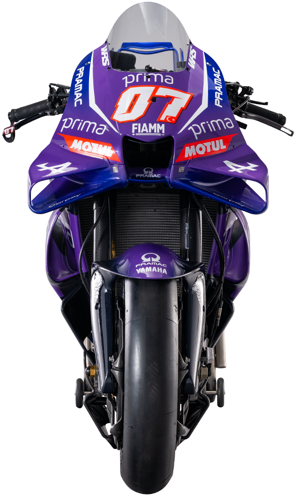
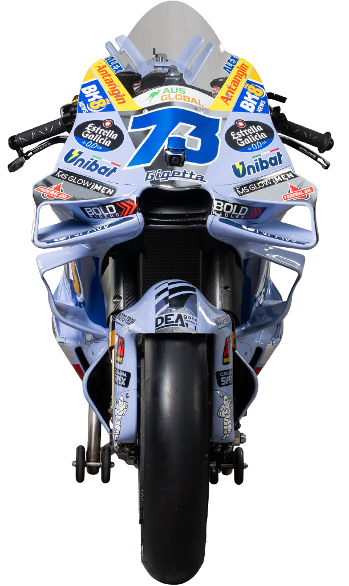

Pramac Racing
Red arrow logo

Wikimedia Commons — Pramac_Racing-Logo.png
Gresini Racing MotoGP
Blue/black block

Seeklogo — gresini-racing-motogp-2025
Pertamina Enduro VR46
Red/black banner

Wikimedia Commons — Pertamina_Enduro_VR46_Racing_Team_-_logo.jpg